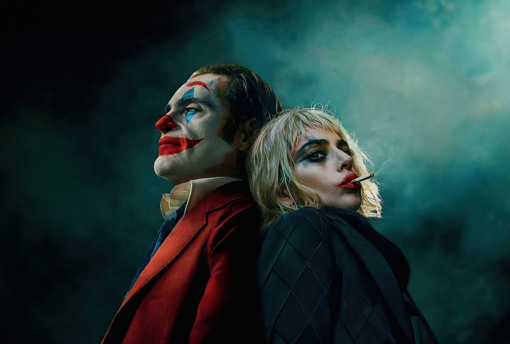
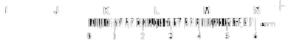

Joaquin Phoenix
Lady Gaga
Joker: Folie à Deux finds Arthur Fleck institutionalised
at Arkham, awaiting trial for his crimes as the Joker.
While grappling with his dual identity, Arthur not only
stumbles upon true love but also discovers the music
that has always been within him.
Struggling with his dual identity, failed comedian
Arthur Fleck meets the love of his life, Harley
Quinn, while incarcerated at Arkham State Hospital.

DirectorTodd Phillips
WritersScott Silver